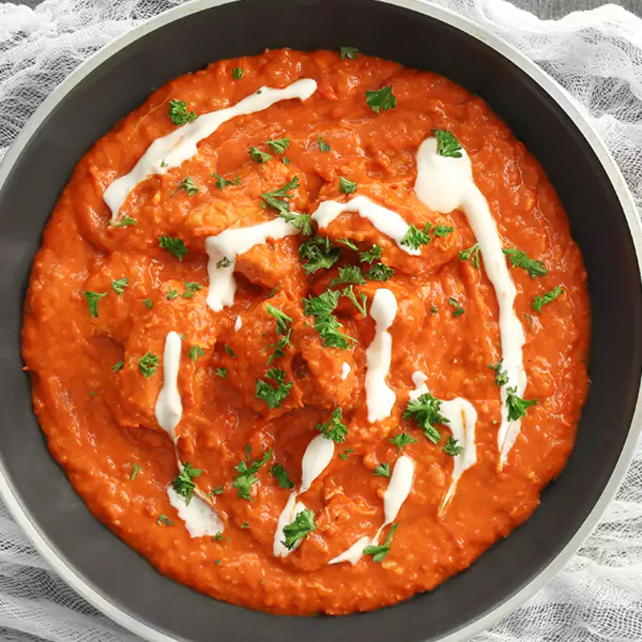

How to Make Butter Chicken
Description
Welcome, to the home of making the best butter chicken in the world!

Butter Chicken garnished with cilantro and cream
Butter Chicken is a North Indian dish and is a close cousin of the U.K's national dish Chicken Tikka Masala.
This recipe will teach you how to make my gramma's version.
Read more about the history of this dish here.
Ingredients
- Lots of Butter
- Some boneless Chicken
- Heavy Cream
- Garlic
- Ginger
- Tomato
- Onions
- Garam Masala
- Spices, according to your preferences!
Directions
- Combine chicken with a marinade of garam masala and your spice mix. Let mixture marinade for 30 mins.
- Heat butter over a large skillet on medium heat. Add your marinated chicken. Fry until brown and set aside.
- In the same pan, sauté onions until brown. Add your garlic and ginger, until fragrant.
- Add crushed tomatoes, chilli powder (optional), and salt. Leave on simmer and let sauce thicken.
- Once sauce has thickened, remove from pan, and blend until smooth. Pour the sauce back into the pan and add the chicken.
- Garnish with cilantro and cream and serve with a side of naan or rice!
Drop a review below!